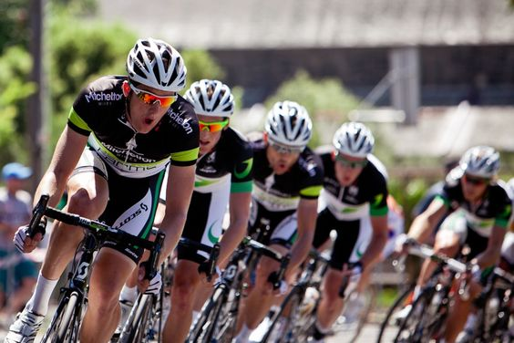

Addressing a pressing public health concern, I delved into the realm of road accidents and their implications.
My objective was clear: to fathom the underlying causes and devise effective preventative measures.
Collecting an extensive dataset from Kaggle—specifically, the UK Accident Dataset—yielded over 1.7 million
records spanning 2005 to 2022. My efforts entailed meticulous data cleaning and transformation, ridding
the dataset of inconsistencies and refining it for analysis. Navigating through this data, I unearthed intricate
accident trends based on factors like location, time, and type. I breathed life into the insights by crafting
interactive dashboards, facilitating lucid communication.Ultimately, this endeavor substantiates my prowess in
data collection, cleansing, analysis, and visualization—a testament to tackling real-world challenges head-on.
Step into the world of retail data analytics with me
as I delve into refining superstore data through the
prowess of Power Query. I'll meticulously mold the
Names columns and deftly manipulate pivot tables
to unveil latent trends and patterns that lie at the
heart of strategic decision-making. Right here is where
the magic unfolds—a process that uncovers priceless
insights capable of charting the course for well-
informed, impactful choices.
In this project I creates a salon appointment
management system using PostgreSQL and Bash
scripting.The system simplifies the appointment
booking process for customers by providing a
graphical user interface (GUI) and automating the
process of retrieving customer information from
the database. providing invaluable insights for
strategic decisions, The system also promotes
efficient salon operations by providing a
centralized system for managing appointments.
The system is implemented using PostgreSQL
& Bash scripting.

In this project I uses SQL to enhance Nashville housing
data. The data was obtained from Kaggle.The project
standardizes the SaleDate column and populates the
PropertyAddress column.It also splits the addresses
into individual columns (Address, City, State) and
OwnerAddress into components (Address, City, State).
Additionally, it handles SoldAsVacant values for
consistency. To improve data quality, duplicate rows are
identified and removed.This SQL project aims to create
a more organized and insightful housing dataset.
This project delves into COVID-19 data using SQL analysis,
uncovering vital insights to inform decision-making.
Handling imbalanced target classes, it carefully selects
metrics. It examines death percentages by location,
ratios of total cases to population, and identifies
high infection rates.Investigating countries with
the highest death counts per population and breaking
down impacts by continent, it reveals pandemic trends.
The project also presents global statistics and tracks
vaccination progress, efficiently utilizing CTEs and
temporary tables for effective querying.Meaningful
views are crafted for future analysis, facilitating
a comprehensive understanding of pandemic trends.
Fond Rouge, acclaimed in Europe, charts its course
across North America's footwear landscape.
We analyze data provided by Found Rough: Sales,
Returns, and Sentiment scores.
Leveraging Tableau for data refinement, patterns
emerge. Low sentiment scores align with
diminished revenue, hinting at counterfeit
concerns impacting engagement.Surprisingly,
high sentiment doesn't guarantee revenue.
To enhance understanding, I suggest deepening
analysis with time-series and income metrics.
Where counterfeits are suspected, adopting
anti-counterfeit measures is pivotal.
As Fond Rouge steps into this new realm,
data illuminates the path, emphasizing
strategic expansion anchored in insights.

Embark on the Sprocket Central Pty Ltd Data Analytics virtual internship by KPMG, designed to elevate sales through incisive dataset analysis.
Unveil valuable insights spanning customer distributions, bike-related purchases, job industry breakdowns, wealth segmentation, and more.
This comprehensive project encompasses data quality evaluation, RFM analysis-driven model development, customer classification, and noteworthy findings, like the prominent 40-49 age group dominating customers, with females driving bike-related sales.
Employing tools such as Word, Excel, PowerPoint, and Power BI, this engagement signifies a strategic leap toward data-fueled growth.
In this substantial Google Colab project, I meticulously investigates nine merged datasets using Python.
Despite imbalanced targets, I was able to unveil insights including strong correlations and significant features.
Analysis of payment methods, consumer locations, and product categories uncovers pivotal trends.
Timestamp examination exposes ordering patterns spanning months, days, and times.
Text analysis reveals prevalent review keywords. Augmenting comprehension, RMF Analysis is employed.
This comprehensive inquiry harnesses the potency of data-driven insights, empowering elevated decision-making capabilities.
Cyclistic, a prominent Chicago bike-share program, boasts 5,800 bikes and 700 docking stations.
Employing versatile pricing plans and aiming to optimize annual memberships, my role as Data Analysts is to uncover usage disparities between casual riders and members.
Through meticulous analysis of historical bike trip data spanning a year, I seek patterns that illuminate divergent user behaviors. Leveraging a dataset sourced from Divvy Tripdata and employing SQL Server Management Studio and Python via Google Colab
I transform raw data into actionable insights.my findings will steer a revamped marketing strategy to convert casual riders into committed annual members, charting Cyclistic's future success.